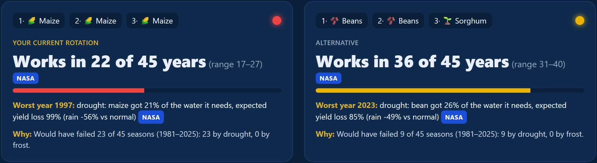
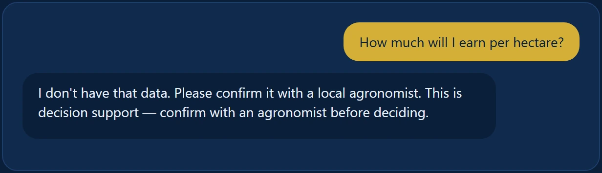
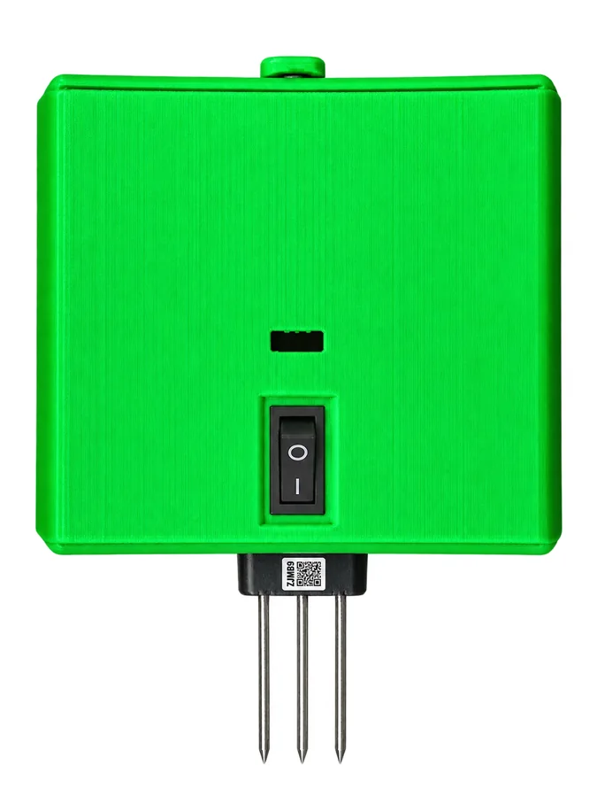
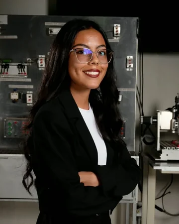
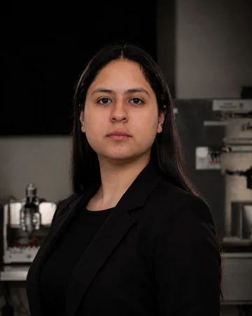

NASA SPACE APPS CHALLENGE 2026 · FIELD SHIFT
RotaHawk
Smart Crop Rotation for Climate Resilience
We test every crop rotation against 45 years of real NASA climate, so a farmer can see which one survives a bad year.
Team Halcones Dorados · Mecatrónica, ITSRLL · Durango
THE PROBLEM
Every season is a bet on the weather
Don José (an example farmer) grows maize in Durango. Each cycle he chooses what to plant without knowing how it would do in a bad year.
One bad year can cost him the harvest, the water and the health of his soil.
NASANASA POWER · daily data since 1981
45 full seasons · 16,436 daily records for this field
Rainfall per year · Durango · 1981–2025 NASA
▲ red = year his maize would have failed
his maize would have failed
Worst year 1997: rainfall 56% below normal
HOW IT WORKS · FROM SOIL TO ANSWER
THE RESULT
Same weather, two rotations

Maize after maize: 23 bad seasons out of 45. Bean–bean–sorghum: 9.
Normal = the 1991–2020 average of the same NASA data.

Asked how much he will earn per hectare, the assistant answers “I don’t have that data.” We have no sourced prices for Durango, so it never invents a number.
LIVE · OUR PROTOTYPE
The node reads the soil, right now


Our prototype node, on the table · ESP32 · NPK sensor over RS485 · Firebase
Soil reading
SENSOR
IMPACT AND VALIDITY
A tool that says how sure it is
Real data
Daily NASA POWER data since 1981: rain, minimum temperature and root-zone soil moisture, 45 full seasons, with FAO crop-water and frost rules. NASAFAO
Honest
A range, not one number: the best option works in 36 of 45 seasons, range 31–40. Calibration against the field sensor: next module, example data today. Every answer cites its source.
Open
Open source: any region can plug in its own crops and climate.
What we say we do not know
Smart Crop Rotation for Climate Resilience
Halcones Dorados · ITSRLL
Code: github.com/JassJmz/rotahalcon · MIT (code) · CC BY 4.0 (docs, images, animation)
Scan to open the web app
The team

Data and backend
AI and repository

Web, animation and pitch
Hardware